CSS
Cascading style sheets
Cascading Style Sheets (CSS) is a language that defines how HTML elements are styled
In other words, HTML structures a document, while CSS formats it
Cascading style sheets
CSS can be applied to single HTML elements, or it can be kept in a separate file and applied to elements throughout a document
Files that hold CSS are called “style sheets” and use the .css exension
Unlike HTML, CSS uses rules instead of tags
Linking style sheets
There are several ways to incorporate CSS into HTML:
- Inline styling
- use of the <style> element nested in the <head> element
- the <link> element and a separate CSS file
Linking style sheets
Placing CSS in a separate file has a lot of advantages:
- A style change can apply to an entire document
- Teams working on Web projects can separate responsibilities
Linking style sheets
YOU SHOULD ONLY EVER USE EXTERNAL STYLESHEETS
Selectors and declarations
There are two parts to a CSS rule:
- selectors
- declarations
Selectors and declarations
A selector references the HTML element that you want to style
A declaration is the style that you want to apply to that element
declarations have two parts:
a property followed by a colon (:) and a space, and a value followed by a semicolon (;) declarations sit between curly brackets
Selectors and declarations
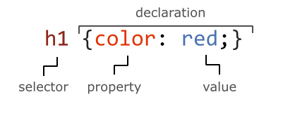IDs and Classes
HTML elements can be referenced by selectors in a number of ways, including:
- the tag name, such as p, h1, table, etc.
- ID selectors, such as #navbar, which include a hashtag symbol (#) as a prefix
- Class selectors, like .happy, which include a decimal (.) as a prefix
- id and class are both universal attributes
- id is used to identify unique elements
- class should be used to categorize elements into groups that will be styled similarly
Comments
Add comments to your CSS file to explain what it does
Add a multi-line comment by starting with the /* characters and ending with the */ characters
CSS Box Model
Every HTML element is represented by a set of boxes that surrounded the content. Each box's properties can then be manipulated to change appearance the appearance of the element.
The 4 distinct boxes are as follows:
- Content
- Padding
- Border
- Margin
CSS Box Model (cont.)

Codepen example
Click here
Always set box-sizing
I would recommend that from now on, every site's stylesheet that you create should have the following code snippet as the very first CSS declaration:
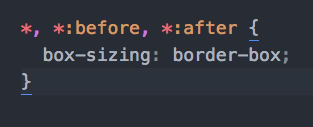Everything's a box!
Just remember that in HTML, everything is just a box. Each box wraps and segregates content that can then be uniquely styled.
Let's have a little look at how General Assembly's site is layed out!
Shorthand CSS
margin and padding are two CSS properties
that have the option of using a shorthand syntax:
-
Setting each side individually e.g.
margin-top: 25px; -
Using a 4 value syntax e.g.
margin: 25px 15px 10px 15px; -
Using a 2 value syntax e.g.
margin: 25px 15px; -
Using a 3 value syntax e.g.
margin: 25px auto 10px; -
Using a single value e.g.
margin: 25px;
CSS display
For the purpose of basic structure and styling, elements typically have some default styles before any code is even written (unless you're using reset.css!).
Some elements have more default styles than others, however all elements fall into one of two categories: 'block' or 'inline' elements.
Block-level elements
Block-level elements are elements that, when no width is set, will expand to fit the length of their container. This means they'll try to occupy the whole row...they're greedy!
Block-level elements have the following characteristics:
-
When no
widthis set, will expand to the width of its container. -
marginandpaddingpush elements away both horizontally AND vertically. -
Ignores the
vertical-alignrule.
Block-level element examples
<div>, <section>, <header>,
<footer>, <ul>, <ol>, <li>, <table>, <fieldset>, <figure>, <aside>,
<article>, <nav>, <blockquote>
Inline elements
Inline elements fit perfectly in the flow of content and allow multiple elements on a row. This makes them perfect for use within content. They're also useful when you want elements to sit next to each other on a row.
Inline elements have they following characteristics:
- Sit in the flow of content.
-
marginandpaddingonly push elements away horizontally. -
Are subject to
vertical-align. -
Do not respond to set
heightorwidth.
Inline element examples
<span>, <em>, <i>, <b>, <strong>, <img>, <a>, <input>, <button>,
<label>, <select>, <abbr>, <textarea>
Codepen
Let's create a quick pen together to go through the difference.
And to also take a look at the 'hybrid' display property of inline-block.
Inline-block elements
As we saw in the example, elements with display: inline-block;
contain characteristics from both block-level and inline elements.
Here's a breakdown of those characteristics:
- Sit in the flow of content, if no margins or padding have been set.
-
marginandpaddingpush elements away both horizontally AND vertically. -
Are subject to
vertical-align. -
Responds to set
heightandwidth.
Hiding elements
Sometimes we might want to hide elements on the page. An example of one of these times might be when there is a dropdown menu that we want to hide until the user hovers over a menu item.
display: none; vs visibility: hidden;
When elements are inserted into the DOM Tree, they are being 'parsed'. But before they are actually placed on the page, they need to be 'rendered'.
display: none;
Elements with display: none; are parsed, but not rendered. Meaning
that surrounding elements act like there is no element present.
visibility: hidden;
Elements with visibility: hidden; are parsed AND rendered. This
means that the hidden element still occupies the space it otherwise would have.
Codepen example
Click here
Positioning
Having a good understanding of CSS positioning is crucial for effective layout of a page. However, it is an often misunderstood property, that can quickly cause issues if used incorrectly.
Position properties
The position property can have one of 5 possible values:
- Static (default)
- Relative
- Absolute
- Fixed
- Sticky (little support)
position: static;
This position declaration is the default value on all elements, if no other position value has been set. It contains the following characteristics:
- Element maintains normal behaviour, sitting in the flow of the document.
-
Does not respond to
top,right,bottom,leftorz-indexproperties.
position: relative;
- If no other properties are set, the element will maintain all normal behviour.
-
Does respond to
top,right,bottom,leftandz-indexproperties. - If one of these other properties are set, the element will change position on screen, but the original position of the element will remain, as if the element was still there.
position: absolute;
- Pulls the element out of the normal flow of the document. Meaning other elements will fill the space left by the absolutely positioned element.
- Block-level elements no longer stretch to fill the width of the container.
-
Does respond to
top,right,bottom,leftandz-indexproperties. -
Is positioned relatively to its closest ancestor with a position property
other than
position: static;.
position: fixed;
- Pulls the element out of the normal flow of the document. Meaning other elements will fill the space left by the fixed position element.
- Block-level elements no longer stretch to fill the width of the container.
-
Does respond to
top,right,bottom,leftandz-indexproperties. -
Is positioned relatively to the screen's viewport. Will maintain this position on the
viewport until another
positionproperty is set.
Codepen example
Click here
z-index
The z-index property specifies the z-order of an element
and its descendants.
This relates to how elements are 'stacked' in the viewport and therefore which elements should appear closer to the user and sit on top of other elements.
z-index (cont.)
Remember, a position value other than static has
to be set in order for z-index to work.
The z-index value can literally be any number you like. So, as
you can imagine, it can get messy very quickly. Always be sure to define a
z-index scale for a project to manage this.
Floats
The CSS float property takes elements out of the normal flow
of the document. The main values are none (default), left and right.
When floated left or right, an element will be placed to the given side of its container, where inline elements or content can flow around it.
Codepen example
Click here
Clearfix
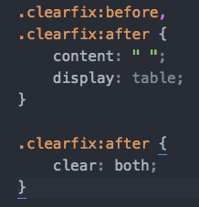
The clearfix class is always assigned to the PARENT element
of floated elements. The styling creates a new block formatting context, which
effectively maps out an element's contents. This forces the parent's height
to register its floated children's heights again.
Floats for layout
Due to the fact that floated elements allow other content and elements to wrap around them, floats are perfect to use for layouts in CSS.
Elements used for structure are always block-level elements. However, when
float is applied, they no longer stretch to fill their container.
Codepen example
Click here
clear
The clear property is directly related to floats. When elements are
floated, other subsequent elements may try and fit horizontally beside the floated
element. In order to re-position the element correctly a clear
property must be assigned.
The most commonly used clear declaration is clear: both;
clear (cont.)
The main values for clear are none, left, right and both:
- none: the element does not clear past floated elements.
- left: the element clears the left floated elements.
- right: the element clears the right floated elements.
- both: the element clears both right and left floated elements.
CSS clear vs .clearfix
clear is a CSS property that is placed on an element to drop
it below floated elements.
clearfix is a class that is placed on a parent element (in the HTML)
when its height has collapsed due to its children being floated.
Try some layouts!
Work from the layout-challenge.pdf file and see how far you can get creating the different layouts using what you've learned today.
Key Takeaways
-
Elements can either be block-level elements or inline elements. There is also a third
displayproperty ofinline-blockthat acts as a hybrid. -
The
positionproperty is used to change the position of elements to eitherstatic,relative,absoluteorfixed -
Floats are often used for layout purposes, but beware the effect they can have on their parent container
Pseudo elements
In the box model CSS snippet we came across a new type of element: the pseudo element.
Every non-replaced element (see this article for definition) comes with two 'free' elements that can be styled independently of the main element.
These elements are the :before and :after
elements.
:before and :after
These two pseudo-elements are your best friends when it comes to adding extra design detail to your elements.
Other pseudo-elements include :first-letter and
:first-line, which can come in handy every now and then.
But :before and :after are by far the most commonly used.
Codepen example
Click here
The selector chain
In our first CSS lesson, we had a look at classes, IDs and we also talked about specificity.
Advanced selectors
Learning how to target elements effectively for styling, beyond simply using classes, is a key skill to develop in CSS.
Let's take a look at some more ways to home in on our target elements.
Descendant selectors
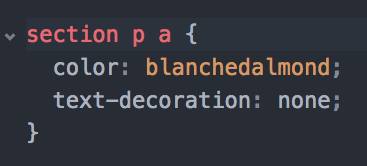What element(s) is this selector chain targeting?
Any anchor tag within any paragraph tag, that is within any section tag. Putting a space between the selectors means that you are targeting a child element.
More selectors
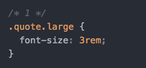 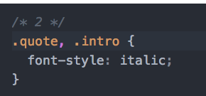 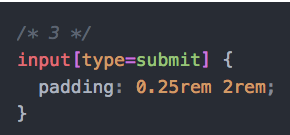What are these 3 selector chains targeting?
- An element with both the classes 'quote' AND 'large'
- Elements with a class of 'quote' OR 'intro'
-
Any input tag that has an attribute of
type="submit"
Selector combinators
-
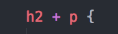 selects matching sibling that immediately follows the first element declared
-
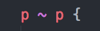 selects all matching elements specified that share a parent with the first element declared
-
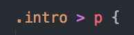 selects the direct matching child of the first element declared
Pseudo classes
-
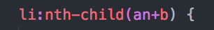 selects a child element whose numeric position in the the series of child elements matches the pattern an+b.
-
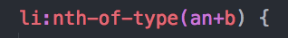 selects the type of element whose position matches the pattern an+b, whilst also having the same parent element.
-
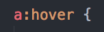 applies styles to an element when the cursor hovers over it.
-
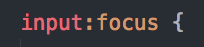 activated when the user selects the element. Typically used for form inputs.
Nested selectors
Learning how to effectively target elements for styling is crucial for writing clean CSS code.
Complete this exercise to build your understanding of selector chains. There will be a few new selectors in there!
If you run into trouble this MDN article is a great resource.
Key Takeaways
-
Every HTML element is made up of a set of boxes: content, padding, margin and border
-
The
box-sizingproperty is a must if you want to keep your sanity -
Non-replaced elements come with two pseudo-elements, which are often used for styling purposes
-
Always use classes to target elements for styling and IDs to target in JavaScript